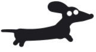
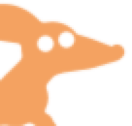
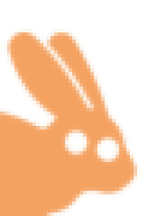

Drawing the dachshund and rabbit닥스훈트·토끼 그림 가이드
Last updated: November 26, 2026마지막 수정: 2026년 11월 26일
A dachshund and a rabbit are getting ready to run on the taskbar next to the cat. I drew them myself and they're not as cute as the cat yet, so I'm looking for someone to make them cuter. This page is everything you need to know before you start. 고양이 옆에서 작업표시줄을 달릴 닥스훈트와 토끼를 준비하고 있어요. 지금 그림은 제가 직접 그린 거라 고양이만큼 귀엽지가 않아서, 더 귀엽게 그려 주실 분을 찾고 있어요. 그리기 전에 알아야 할 건 이 페이지에 다 있어요.
What they look like now지금 그림
The cat on the left is from RunCat365 and stays as it is. The dachshund and rabbit run alongside it, so it's nice if they look like they belong together. 왼쪽 고양이는 RunCat365 그림이고 그대로 써요. 닥스훈트와 토끼는 이 고양이와 같이 달리니까, 함께 있어도 어울리면 좋아요.
Cat고양이
Dachshund (now)닥스훈트 (지금)
Rabbit (now)토끼 (지금)
1One black silhouette검은 실루엣 하나로
The app only uses the shape of your drawing (its transparency) and paints it in the color the user picks. Lines, patterns and shading inside the body won't show. Draw a single solid shape in black. 앱은 그림의 모양(투명도)만 쓰고, 색은 사용자가 고른 색으로 칠해요. 몸 안쪽 선, 무늬, 명암은 보이지 않아요. 검은색 한 덩어리로 그려 주세요.

2Eyes are see-through holes눈은 투명한 구멍으로
Leave the eyes as small transparent holes inside the head. The app fills them with white. Every small closed hole in the right half of the drawing (the head side) is treated as an eye, so don't leave any other closed gaps there. 눈은 머리 안에 작은 투명 구멍으로 뚫어 두세요. 앱이 흰색으로 채워요. 그림 오른쪽 절반(머리 쪽)에 있는 작은 막힌 구멍은 모두 눈으로 보니까, 그쪽에 다른 막힌 틈은 남기지 말아 주세요.
Your drawing그린 그림

In the app앱에서Your drawing그린 그림

In the app앱에서3Facing right오른쪽을 보고
Draw it running to the right. When it runs left, the app flips it. 오른쪽으로 달리는 모습으로 그려 주세요. 왼쪽으로 갈 때는 앱이 뒤집어요.
4One stride in five frames한 바퀴를 다섯 장으로
Five frames make one running loop, so frame 5 should lead back into frame 1. Use the same canvas size for all five, and keep the ground line (where the feet touch) at the same height so it doesn't bob around. 다섯 장이 달리기 한 바퀴예요. 5번째 장 다음에 다시 1번째 장이 오니 자연스럽게 이어지게 해 주세요. 다섯 장 모두 캔버스 크기를 같게, 발이 닿는 바닥선도 같은 높이로 맞춰 주세요. 그래야 위아래로 흔들리지 않아요.
5It shows up tiny아주 작게 보여요
On the taskbar it's 28 pixels tall by default (users can pick 16 to 72). Thin legs and tiny details disappear at that size. Make sure you can still tell it's a dachshund or a rabbit when it's that small. 작업표시줄에서는 기본 28픽셀 높이로 달려요(사용자가 16~72픽셀로 바꿀 수 있어요). 이 크기에서는 가는 다리나 작은 꾸밈이 사라져요. 이만큼 작아도 닥스훈트인지 토끼인지 알아볼 수 있게 그려 주세요.
6Files파일
- Five PNGs with a transparent background, about 100 pixels tall. Bigger is fine too; the app scales it down. Width is up to you. 배경이 투명한 PNG 다섯 장, 높이 100픽셀 정도요. 더 크게 그려도 앱이 줄여서 써요. 가로는 자유예요.
-
Names:
dog_running_0.pngtodog_running_4.png,rabbit_running_0.pngtorabbit_running_4.png. 이름:dog_running_0.png~dog_running_4.png,rabbit_running_0.png~rabbit_running_4.png - You don't have to draw both. Just the dachshund or just the rabbit is welcome. 둘 다 그리지 않아도 돼요. 닥스훈트만, 토끼만이어도 좋아요.
How to send it보내는 방법
Send a DM to @woodada.cat on Threads. Showing a frame or two before you finish all five is fine too. If you use GitHub, you can replace the PNGs in app/src/Woodada/Assets/Dog/ or Rabbit/ and open a pull request.
쓰레드 @woodada.cat으로 DM 주세요. 다섯 장을 다 그리기 전에 한두 장 먼저 보여 주셔도 좋아요. GitHub를 쓰신다면 app/src/Woodada/Assets/Dog/나 Rabbit/의 PNG를 바꿔서 PR을 보내 주셔도 돼요.
Credit and license크레딧과 라이선스
- Woodada is a free app I make on my own, so I'd like to say thanks with a credit. Your name will be there for sure. Woodada는 혼자 만드는 무료 앱이라, 고마움은 크레딧으로 남기려고 해요. 그려 주신 분 이름을 꼭 적어 둘게요.
- Runner drawings are released under the MIT License, like the app. 러너 그림은 앱처럼 MIT 라이선스로 공개돼요.
- There's no deadline. I'll keep looking until a design is chosen. 마감은 없어요. 디자인이 정해질 때까지 계속 받아요.